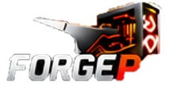

Fiabilité
Du matériel testé
et des solutions durables.

Réparer. Améliorer. Optimiser.
Des solutions informatiques simples, fiables et accessibles, ici en Mauricie.
Du matériel testé
et des solutions durables.
Des systèmes optimisés
selon vos besoins.
Plus de valeur pour
votre budget.
Ici, en Mauricie.

ForgePC Mauricie est née d’une idée simple : offrir une alternative aux ordinateurs neufs souvent coûteux et aux réparations compliquées. Notre objectif est de remettre en circulation de bonnes machines, de réparer lorsque ça en vaut la peine et de proposer des solutions adaptées aux besoins réels de chaque client.
EN SAVOIR PLUS →